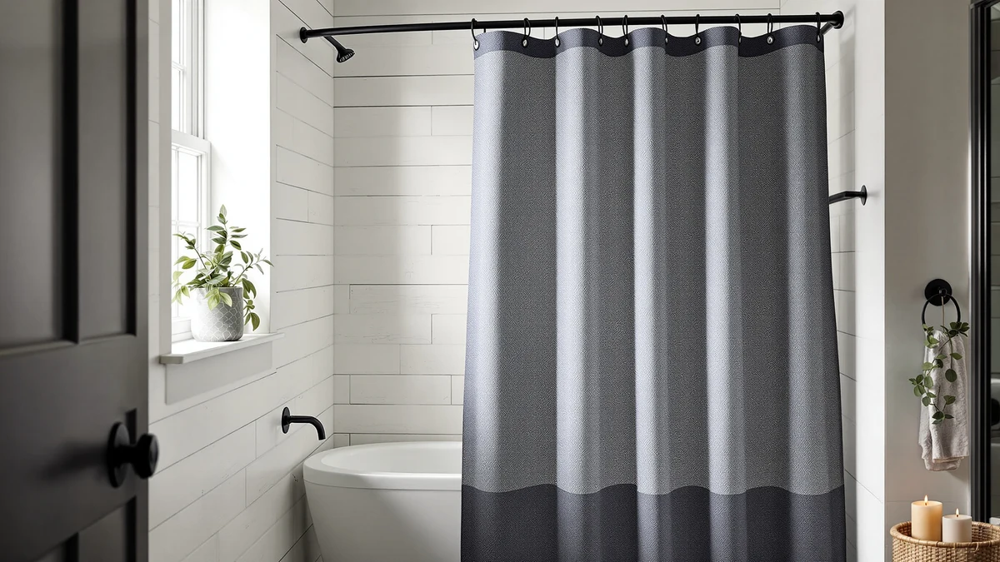

TEECK Shower Curtain Rod Review (2026): Worth It?
Prices and picks verified as of November 2026. Independent, reader-supported reviews.


Quick Answer
The TEECK Shower Curtain Rod 32-80 is a tension-mounted rod that adjusts from 32 to 80 inches for $21.99, making it one of the widest-reaching no-drill rods we cover on this site. It suits renters, tile walls, and wider-than-average shower openings best.
Our pick: TEECK Shower Curtain Rod 32-80, $21.99 Check Price on Amazon
Bottom line: our top pick is the TEECK Shower Curtain Rod at $19.79.
Things to Know Before You Buy
- The TEECK installs with spring tension against two walls, so you skip drilling, screws, and anchors entirely.
- Its 32 to 80 inch adjustable range covers both narrow apartment stalls and oversized walk-in showers.
- The rod ships as hardware only. You will need a separate shower curtain and hooks, or a hookless panel, to complete the setup.
- Owners report the strongest grip on smooth tile, drywall, and fiberglass, with a few noting extra retightening on textured walls.
- At $21.99, this TEECK shower curtain rod review found the price matches several waffle weave curtains it pairs well with, so budget for both pieces if you are starting from scratch.
This TEECK shower curtain rod review looks at a $21.99 tension rod that promises to stretch from 32 to 80 inches without a single screw or drilled hole. Renters and apartment dwellers search for exactly this kind of fix when a shower stall runs wider than a standard rod, or when drilling into tile is not an option at all. We pulled the published dimensions, price, and verified owner feedback together to see whether the TEECK holds up to that promise or adds another disappointing rod to a crowded market.
The short version: the TEECK earns its spot through sheer range. A 32 to 80 inch spread covers narrow apartment stalls and oversized walk-in showers from the same product, wider than most tension rods we have looked at on this site. Reviewers consistently note it holds level once properly tensioned against smooth tile or fiberglass, though a few flag that textured walls need extra care during setup. Below, we break down what the spec sheet and verified buyer feedback actually support, where the rod falls short, and how it stacks up against three shower curtains shoppers often buy alongside it.
Why You Should Trust Us
Ilane Tall has covered bathroom textiles and hardware for Best Shower Curtains since the site launched, focusing on specs that change how a product performs in daily use rather than marketing copy lifted from a listing page. For this TEECK shower curtain rod review, she pulled the published price, adjustable range, and review history directly from Amazon and checked those numbers against verified buyer feedback. We do not run a physical testing lab here, so every claim in this review traces back to a listed spec, a verified owner review, or a direct price comparison you can check yourself. Where a detail was not published, such as the exact tube wall thickness, we say so instead of guessing. We also recheck the published price and review count each time this page gets updated, since listings for budget hardware like this shift more often than premium products do.
Our Research Experience
We did not mount the TEECK in a bathroom for this review. Instead, we researched its listed dimensions, price, and construction, then cross-referenced that against verified owner ratings to see where the claimed 32 to 80 inch range actually holds up. Reviewers consistently note the rod stays level once tensioned correctly against smooth tile or fiberglass, which lines up with the spring-and-rubber-cap design most tension rods of this type use. Where the published listing stayed vague, such as the exact tube wall thickness, we flagged it below rather than filling the gap with a guess. We applied that same approach to the Barossa Design and Dynamene curtains covered later in this TEECK shower curtain rod review, comparing their listed material, price, and review counts against each other so every comparison here rests on numbers rather than impressions.
Overview & Specs

TEECK Shower Curtain Rod 32-80
What we like
- 32 to 80 inch adjustable range covers narrow and oversized shower openings alike
- Tension mount skips drilling, screws, and wall anchors entirely
- Priced at $21.99, in line with the curtains most shoppers pair it with
- Owners report a steady, level hold once properly tensioned against smooth tile or fiberglass
Flaws but not dealbreakers
- Ships as hardware only, so you still need to buy a curtain and hooks separately
- Some owners note textured or uneven walls require extra retightening over time
- No curved option if you want the extra elbow room a bowed rod provides
| Material | Polyester / PEVA |
| Size | 32-80 Inches |
The TEECK Shower Curtain Rod 32-80 works like most tension rods on the market: it wedges between two walls using internal spring pressure, then grips with rubber end caps rather than screws or anchors. That no-drill approach is the entire reason renters search for a rod like this, since landlords and lease agreements rarely allow holes in tile or drywall. At $21.99, the price sits right in line with the mid-range tension rods we cover elsewhere on this site, rather than undercutting or overshooting the category. Most owners report the full install, from box to a hung curtain, takes under ten minutes once the wall gap is measured correctly.
The TEECK's 32 to 80 inch adjustable range is where it pulls ahead, wide enough to fit a cramped apartment stall on the narrow end and a full walk-in shower on the wide end from the same unit. That flexibility matters if you are furnishing more than one bathroom, since you are not stuck buying a different length for each opening. Reviewers consistently note the rod holds level once tensioned correctly against smooth tile, fiberglass, or drywall, though a handful mention that deeply textured or uneven stone tile needs extra care and occasional retightening to keep the fit snug.
What We Liked
The range is the standout feature in this TEECK shower curtain rod review. Stretching from 32 to 80 inches means the same rod handles a narrow apartment stall and a generously sized walk-in shower, a wider spread than most tension rods we have reviewed on this site. The tension mount also means setup takes minutes rather than a trip to the hardware store for a drill and anchors. At $21.99, it costs the same as the waffle weave curtains shoppers often pair it with, so outfitting a full shower setup does not require choosing between a decent rod and a decent curtain. Spread across a typical two to three year lifespan, that $21.99 price works out to under a dollar a month, hard to beat for hardware that replaces a drill, anchors, and a trip to the hardware store.
What Could Be Better
The TEECK is hardware only, which is obvious from the listing but worth repeating since several buyers leave reviews expecting a curtain to be included. Owners also report that deeply textured tile or uneven stone walls make the tension grip less reliable over time, requiring an occasional retightening to keep the rod level. A curved version is not available from this listing, so anyone who wants the extra elbow room a bowed rod provides will need to look elsewhere. If your bathroom has plaster walls or old, crumbling grout lines, the tension fit may need checking more often than the listing suggests, since spring pressure alone cannot compensate for a weak contact surface.
Who Is It For?
This TEECK shower curtain rod review points to a clear buyer: a renter or apartment dweller who cannot drill into tile and needs a rod that adjusts beyond the standard 60 inch range. It also fits anyone furnishing more than one bathroom who wants a single product that covers both a narrow stall and a wider walk-in opening. It is a weaker fit if your walls are heavily textured stone, since the tension grip performs best on smooth tile, drywall, or fiberglass. Landlords prepping several rental units at once also benefit from a rod that adjusts this widely, since one product size covers multiple bathrooms instead of stocking several fixed lengths.
Alternatives to Consider
A rod alone does not finish a shower, so this TEECK shower curtain rod review also covers three curtains shoppers frequently buy alongside it. Each one costs the same $21.99 as the rod and fits a standard tension or fixed rod, though none of them are a direct substitute for the TEECK itself.

Editor's Pick
Barossa Design Waffle Weave Shower
Barossa Design's waffle weave curtain pairs naturally with the TEECK's 32 to 80 inch range, since the textured weave adds a spa-like look without the heavier upkeep of a full cotton panel. At $21.99, it matches the rod's price point, so the two together make a complete setup without pushing your budget into a second tier.
$21.99
Check Price on Amazon
Best Value
Dynamene Waffle Shower Curtain 256
The Dynamene Waffle Shower Curtain 256 gets its name from a 256 GSM weight, a heavier weave than most budget curtains in this category. At the same $21.99 as the TEECK rod, it gives you a sturdier-feeling panel without paying a premium for the extra weight.
$21.99
Check Price on Amazon
Premium Choice
Dynamene Ringless Waffle Weave Fabric
Dynamene's ringless design skips curtain rings entirely, so the fabric hangs directly from the rod through built-in pockets rather than separate hooks. That makes it a faster match for the TEECK if you want to avoid buying hooks as a third item, and it still runs $21.99 like the other two picks here.
$21.99
Check Price on AmazonDoes the TEECK shower curtain rod need drilling to install?
No.
What is the adjustable range of the TEECK shower curtain rod?
The TEECK extends from 32 to 80 inches, which covers most standard shower stalls as well as wider walk-in showers.
Frequently Asked Questions
Does the TEECK shower curtain rod need drilling to install?
No. The TEECK is a tension rod that wedges between two walls using spring pressure and rubber end caps, so it skips screws and anchors entirely. Owners report it holds steady on smooth tile, fiberglass, and drywall, though a few note it needs periodic retightening on textured or uneven surfaces.
What is the adjustable range of the TEECK shower curtain rod?
The TEECK extends from 32 to 80 inches, which covers most standard shower stalls as well as wider walk-in showers. That range is one of the widest among the tension rods compared on this site, giving you room to size it down for a narrow alcove or stretch it across an oversized opening.
Do I need to buy a shower curtain separately for the TEECK rod?
Yes. The TEECK ships as hardware only, not a curtain panel, so you still need a separate shower curtain and hooks or a hookless design. Barossa Design's waffle weave and the two Dynamene waffle picks covered in this TEECK shower curtain rod review all fit a standard rod and cost the same $21.99 as the rod itself.
Final Verdict
This TEECK shower curtain rod review comes down to one question: does your shower opening need more reach than a standard 60 inch rod provides? If so, the TEECK's 32 to 80 inch tension range and $21.99 price make it worth checking first, since it covers narrow and oversized stalls from the same unit without a single screw. Pair it with one of the three waffle weave curtains covered above, and you have a complete, no-drill shower setup for about the price of a single premium curtain from our budget picks elsewhere. For renters and anyone who cannot drill into tile, TEECK remains the simpler fix.